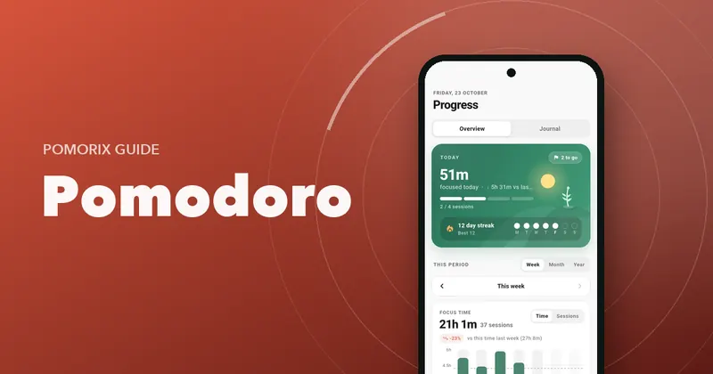

How to Choose the Best Pomodoro Timer App for Android: A 12-Point Checklist
What separates a great Pomodoro or study timer app from a distracting one: 12 things to check before you install, from reliable alerts to privacy and stats.

On this page
- 1. No ads, no distractions
- 2. Starts in seconds, no account required
- 3. Alerts you can trust with the screen off
- 4. Custom lengths, without the clutter
- 5. A Flow (count-up) mode
- 6. A light task list
- 7. Categories for different kinds of work
- 8. Stats that tell you something useful
- 9. Goals and streaks
- 10. Help with distractions
- 11. Your data, under your control
- 12. Pleasant to open every day
- The checklist at a glance
- How to test any app in one day
- Questions people ask
Key takeaways
- The best focus app is the one with the fewest distractions: no ads, no feeds, no pressure to sign up.
- On Android, reliable alerts with the screen off matter more than almost any feature.
- Look for flexibility (custom lengths, Flow mode, tasks) without clutter.
- Stats and streaks keep you coming back, but your data should stay yours, with export and backup.
Search “Pomodoro timer” on Google Play and you'll find hundreds of apps. Many look alike in screenshots, but they feel very different after a week of real use. Some ring late. Some show ads between sessions. Some want an account before you can press start.
Here's a 12-point checklist for choosing a Pomodoro or study timer app for Android that will actually help you focus. We built Pomorix around these points, and we'll show how it handles each, but the checklist works for any app you're considering.
1. No ads, no distractions
A focus app has one job: protecting your attention. Ads do the opposite. They're designed to grab your attention, often right when a session ends and you're most likely to drift. A good focus app has no ads, no social feed and no notifications you didn't ask for.
2. Starts in seconds, no account required
You should be able to install the app and start your first session within a minute. A timer doesn't need your email address. Mandatory sign-up adds friction and means your data lives on someone else's server.
3. Alerts you can trust with the screen off
This is the most underrated point, and it's specific to Android. Many phones aggressively restrict background apps to save battery, so a timer that works fine in testing can ring minutes late, or not at all, when your screen is off. Look for:
- A choice of alert type: a normal sound, a loud alarm, or vibration only.
- Guidance for battery settings on your phone, so alerts arrive on time.
- Controls in the notification, so you can pause or finish without opening the app.
4. Custom lengths, without the clutter
25/5 is a great start, but you'll want to adjust. Check that you can set focus, short break and long break lengths, how many sessions come before a long break, and whether the next session starts automatically. Bonus points for adding or removing a few minutes during a running session. If you're unsure what lengths to pick, read how to choose your Pomodoro length.
5. A Flow (count-up) mode
For deep work, a fixed alarm can break your concentration. A count-up Flow mode lets you work until your focus dips and then earn a proportional break. Having both modes in one app means all your focus time ends up in one place. See Flowtime vs Pomodoro.
6. A light task list
You don't need a full project manager inside your timer, but you do need to say what you're working on. Look for simple tasks with a session estimate, progress (like “2 of 4”) and the ability to start a session straight from a task.
7. Categories for different kinds of work
Study, work, coding, reading: if you can tag sessions, you can see where your time actually goes. Even better if each category can have its own default length.
8. Stats that tell you something useful
A total minutes counter is nice. Insight is better. Useful stats answer questions like:
- How much did I focus this week compared with last?
- Which subjects or projects got my time?
- What are my most productive hours?
- Am I getting more consistent?
Look for week, month and year views, time by category, daily average, best day and a long-term view like a heatmap of focused days. Read why this matters in how to track your study hours.
9. Goals and streaks
A daily goal (in sessions or minutes) and a day streak are simple but powerful motivators. They turn “I should study more” into a target you can see and protect. A gentle daily reminder helps too.
10. Help with distractions
The best apps go beyond the timer to help you actually stay focused:
- Optional automatic Do Not Disturb during focus sessions.
- Keeping the screen awake while a session runs, if you want it.
- A way to note when you got distracted, so you can see it improving.
- Background focus sounds like rain or brown noise to mask noise.
11. Your data, under your control
Your focus history is personal. Check where it's stored, whether you can back it up and restore it when you change phones, and whether you can export it (CSV is handy for Excel or Google Sheets). Also check whether analytics are optional.
12. Pleasant to open every day
You'll open this app several times a day for months. Design matters: a calm interface, a dark theme for late nights, a home screen widget and support for tablets if you use one. If an app feels noisy or cluttered, you'll stop using it.
The checklist at a glance
| Check | Why it matters | Pomorix |
|---|---|---|
| No ads | Ads compete for the attention you're protecting | Yes, no ads |
| No account | Start fast, keep data private | No sign-up; data on your phone |
| Reliable alerts | Android battery limits can delay timers | Sound, loud alarm or vibration, plus battery guide |
| Custom lengths | Different work needs different rhythms | Focus 1–180 min, breaks, cycle, auto-start, ±5 min |
| Flow mode | Deep work without a hard stop | Count-up with earned breaks and optional nudge |
| Tasks | Know what each session is for | Tasks with session estimates and progress |
| Categories | See where time goes | Custom icon, colour and default length |
| Stats | Learn and improve | Week/month/year, by category, best hours, 12-month heatmap |
| Goals & streaks | Build the habit | Daily goal in sessions or minutes, day streaks, reminder |
| Distraction help | Stay in the session | Auto Do Not Disturb, keep screen awake, distraction counter |
| Data control | Your history is yours | Backup & restore, CSV export, optional analytics |
| Design | You'll open it daily | Light & dark themes, widget, phones and tablets |
How to test any app in one day
- Install it and time how long it takes to start your first session.
- Run a session with the screen off and the phone in another room. Did the alert arrive on time?
- Change the lengths to 50/10. Was it easy?
- Complete four sessions, then open the stats. Did you learn anything?
- Look for a backup or export option before you commit months of history.
Once you've chosen, here's how to get the most out of a Pomodoro timer from day one.
Questions people ask
What is the best free Pomodoro app for Android?
The best one for you depends on how you work, but look for an app with no ads, reliable alerts with the screen off, custom session lengths, a simple task list, useful stats and an easy way to back up or export your data. Pomorix was built around exactly this checklist.
Why does my Pomodoro timer not ring when the screen is off?
Many Android phones aggressively limit apps in the background to save battery, which can delay or block timer alerts. Allow the app to run without battery restrictions and to use exact alarms. Some apps, including Pomorix, include a guide for these settings.
Do I need an account for a Pomodoro app?
No. A timer doesn't need your email to work. Apps that store your data on your phone and let you back it up to a file avoid the privacy trade-offs of a mandatory account.
Are Pomodoro apps with ads bad for focus?
Ads are a distraction by design: they compete for your attention, often right when a session ends. For a tool whose whole job is protecting your focus, an ad-free app is a much better fit.